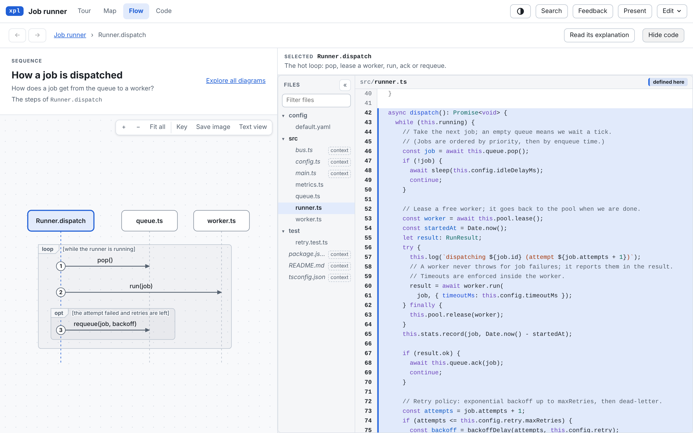

Vite
See how Vite serves an app in development and builds it for production.
Source: Vite at 8a4c19c · MIT license
A guide to your code, linked to the source
xpl draws diagrams of your code and links each box to its source. Use it to learn a repository or to review a change. An agent writes the guide, and xpl checks that every code link points at code that exists now. A person still checks that the text is right.
Put the cursor in the code. The diagram lights up too.

This is a guide to a small TypeScript job runner, in one HTML file. Download it and open it offline.
Eight guides you can open in your browser or save for offline reading.
See how Vite serves an app in development and builds it for production.
Source: Vite at 8a4c19c · MIT license
See how a schema checks input and returns parsed data or errors.
Source: Zod at 0b216ef · MIT license
See how xpl builds a checked guide from indexed source.
Source: xpl at 7a291f9 · MIT license
Follow a Go command from its definition to execution.
Source: Cobra at adbc881 · Apache 2.0 license
From repository to guide
xpl checks where each code link points and that the code has not changed. The author still has to get the text right.
xpl finds files, symbols and references. Each reference is labelled precise (checked by a language tool) or heuristic (matched by name).
You ask a question. The agent writes diagrams, short notes and links to the code, as data.
Each code link must point at real code that has not changed. A missing or changed link stops the export. A person still reviews the text.
Read the diagrams beside the code, follow the tour step by step, or export one HTML file with the code inside.
Try it on your repository
Install from npm with Node 22.12 or newer. The source is available on GitHub.
xpl reads TypeScript, JavaScript, Python, Go and Java, and Rust (declarations, some calls, imports within the package), Ruby and PHP in part: languages and precision.
Read Getting startedInstall xpl and its skill for Claude Code:
npm install --global @krimvp/xpl
xpl skill installIn Claude Code, in your repository, ask a question:
/code-explainer explain How does a failed job get retried? Audience: maintainers.
Other agents (Codex, Pi, Factory Droid, Devin) and the install from a source checkout
are in the install options.
/code-explainer is a chat command for your agent, not a shell command.
No agent? Draft a guide with the CLI alone, then write its text yourself:
xpl index
xpl outline # find the id of the function where the answer starts
xpl start my-guide --question "How does a failed job get retried?" \
--entry <id> --audience maintainers
xpl view my-guideThe skill indexes your project, writes the guide and checks it before it opens.